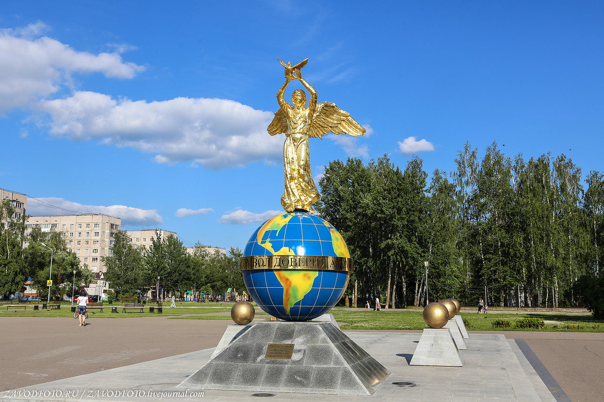
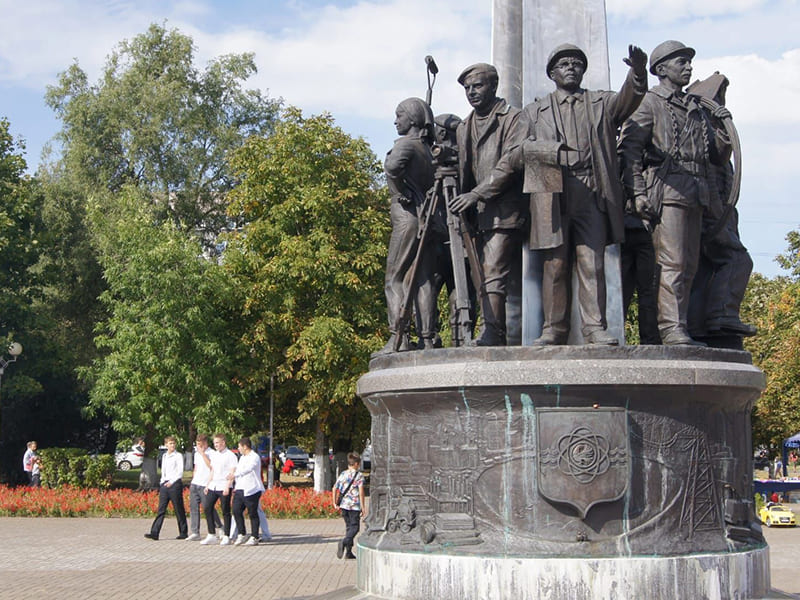
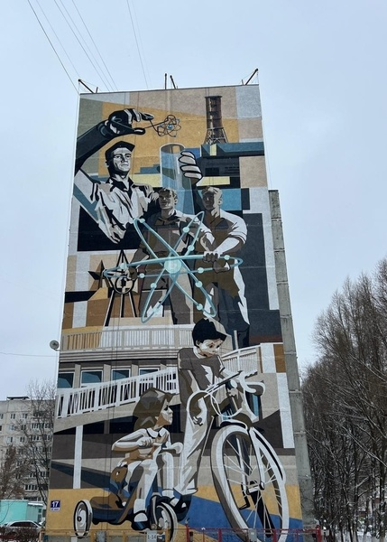

О городе
Город Десногорск расположен в юго-восточной части Смоленской области. Десногорск - самый молодой и обустроенный город на Смоленщине. Город расположен на берегу живописного Десногорского водохранилища площадью 42 кв.км., развитый, красивый, со своей инфраструктурой, с населением почти 25 тыс. жителей, он разделен на микрорайоны. Микрорайоны сформированы многоэтажной застройкой (в основном, девяти и шестнадцатиэтажными домами), с размещенными внутри нее детскими учреждениями.
Достопримечательности
"Ангел мира"
"Ангел мира" Открыт 12 сентября 2014 года. Авторский коллектив: Н. Н. Дроздов, О. В. Олейник, В. Н. Ганичев, Л. П. Кураков. Автор художественной концепции - П. Т. Стронский. Художественная композиция является международным и межнациональным символом милосердия, взаимопонимания и сострадания, духовно объединяющим людей разных религий и культур общества.
Памятник Первостроителям Смоленской АЭС
Памятник Первостроителям Смоленской АЭС - самый большой и красивый памятник в Десногорске. Установлен в 2014 году. Его автор - заслуженный скульптор Республики Беларусь Игорь Чумаков.
Мурал
Арт-объект появился по инициативе Концерна «Росэнергоатом» и приурочен к 40-летию пуска первого энергоблока Смоленской АЭС, 30-летию Концерна «Росэнергоатом», 15-летию Госкорпорации «Росатом». Мурал выполнен под руководством продюсера проекта STENKA Константина Рахманова.
Галерея
Контакты
Email: nefitesi05@mail.ru
Телефон: +7-(910)-760-06-22